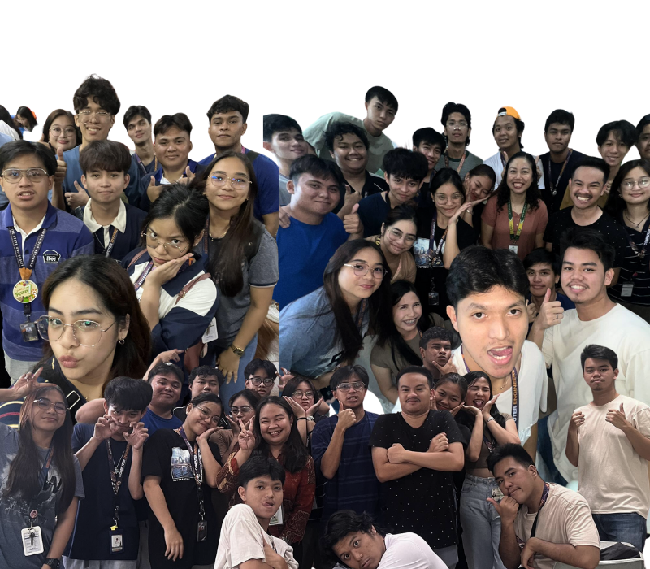

"We are students of BSCPE 2-2 Batch 2023-2024, passionate about Computer Engineering. Despite our lack of prior experience, we embarked on a challenging journey to complete this project for the Contemporary World course. This endeavor has been both rewarding and stressful, providing us with invaluable insights and practical knowledge in our field. This final project focuses on exploring state concepts, showcasing our dedication to learning and applying new skills."
